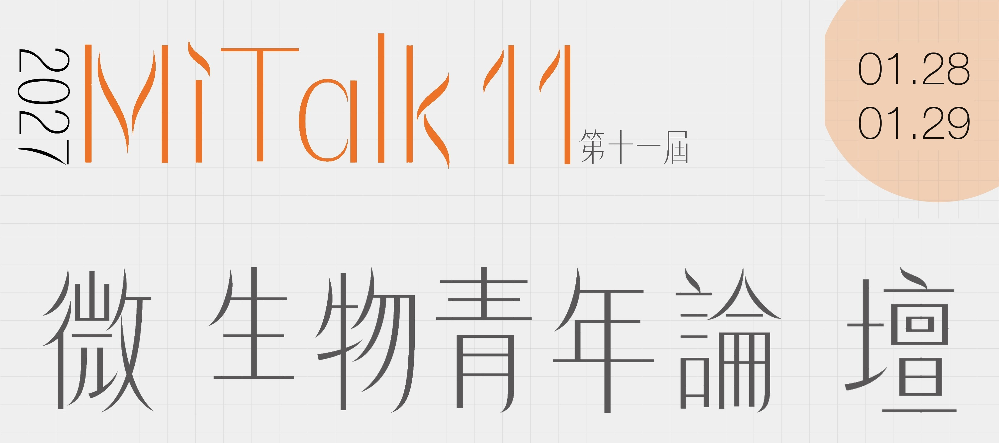
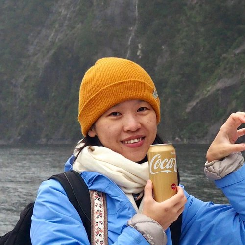
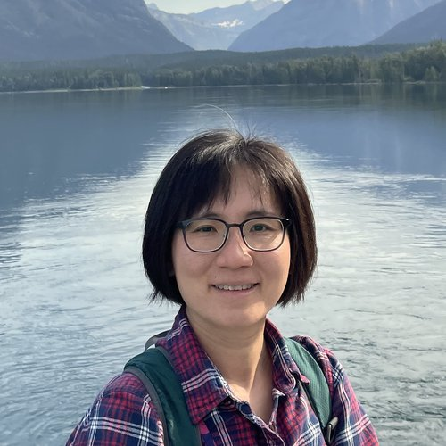
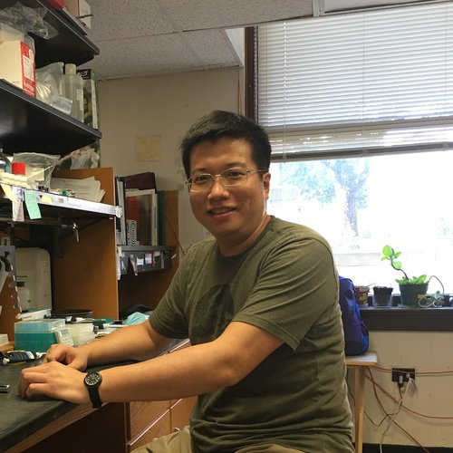
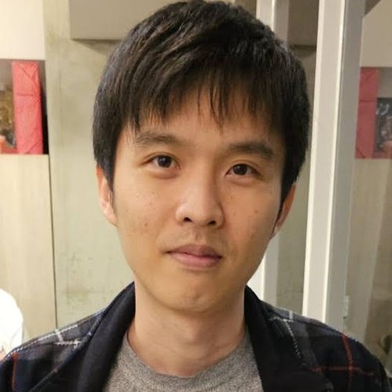
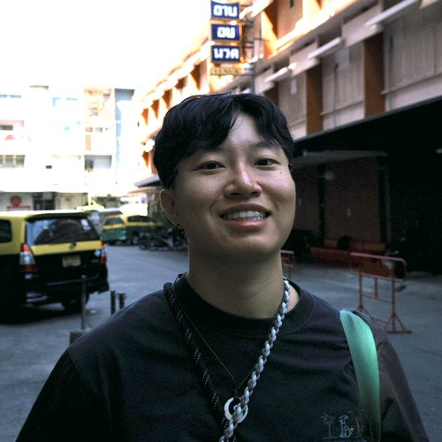
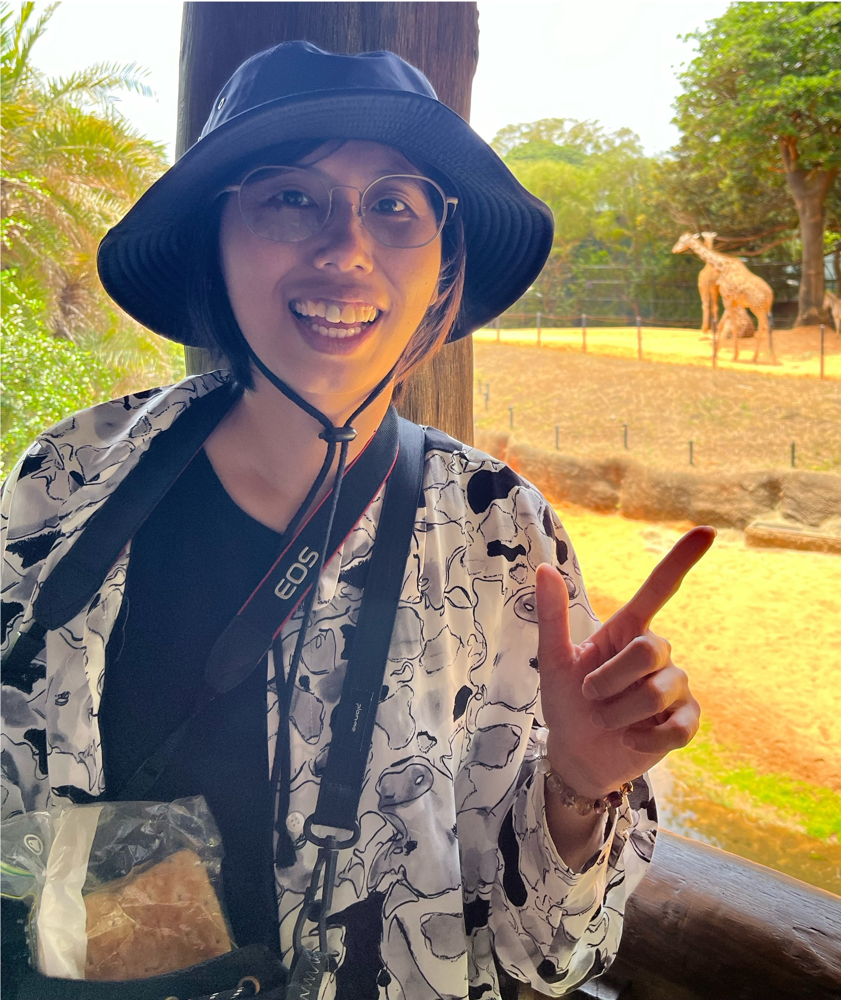
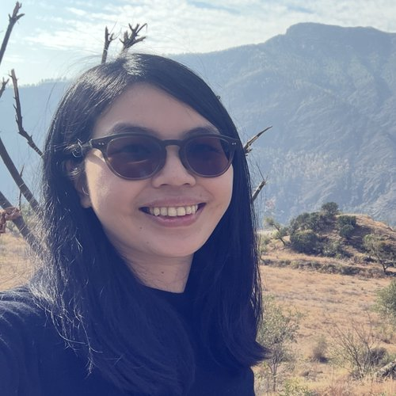
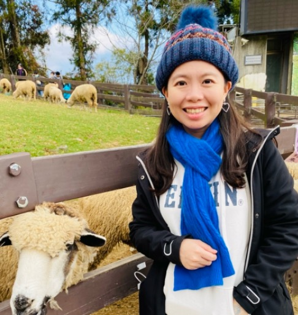

MiTalk（微物坊）於 2014 年創立，是集結一群鍾情微生物生態研究之學者所打造的交流園地。平台由湯森林研究員發起，旨在串聯來自不同領域的研究人員；其後在 2016 年，於江殷儒研究員與陳俊堯老師的協助下，正式架設官方網站。
在此誠摯邀請各位研究生與大學生踴躍加入 MiTalk 11 YSW，透過為期兩天的專題演講、圓桌討論以及海報論文競賽等活動，與同領域的專家學者交流互動，藉此開拓學術視野、拓展研究人脈。
| 項目 | 時間 |
|---|---|
| 早鳥報名 （含紀念品） | 2026/10/01 – 2026/10/30 |
| 繳費 | 2026/11/01 – 2026/11/30 |
| 海報論文摘要投稿截止 | 2026/12/31 |
從主題演講、圓桌會議到海報論文競賽，兩天充實的微生物相交流盛會。
大會電子手冊將於活動前公告，包含完整議程、講者簡介與場地地圖。
兩天完整議程，含主題演講、短講競賽、圓桌論壇與海報展示等活動時段。Full two-day schedule, including talks, lightning talk competitions, roundtable discussions, and poster sessions.
| 時間Time | 場地一（大廳）Venue 1 (Lobby) | 場地二（大教室101）Venue 2 (Room 101) | 場地三（201）Venue 3 (Room 201) |
|---|---|---|---|
| 09:40–10:20 (40 min) | 報到Check-in | – | – |
| 10:20–10:30 (10 min) | – | 開場與大合照Opening Remarks & Group Photo | – |
| 10:30–11:30 (60 min) | – | 演講Talks (3 Speakers) | – |
| 11:30–13:00 (90 min) | 午飯Lunch | – | 與導師飯局Lunch with Mentors |
| 13:00–14:00 (60 min) | – | 短講競賽Lightning Talk Competition | – |
| 14:00–15:00 (60 min) | – | 學生老師圓桌Student-Faculty Roundtable | 學生老師圓桌Student-Faculty Roundtable |
| 15:00–15:30 (30 min) | 咖啡點心Coffee Break | – | – |
| 15:30–16:30 (60 min) | – | 演講Talks | – |
| 16:30–17:30 (60 min) | 海報時間Poster Session | – | – |
| 17:30 後 | 活動時間Free Time | – | – |
| 時間Time | 場地一（大廳）Venue 1 (Lobby) | 場地二（大教室101）Venue 2 (Room 101) | 場地三（201）Venue 3 (Room 201) |
|---|---|---|---|
| 09:30–10:00 (30 min) | 報到Check-in | – | – |
| 10:00–11:00 (60 min) | – | 演講Talks | – |
| 11:00–11:30 (30 min) | 咖啡點心Coffee Break | – | – |
| 11:30–12:30 (60 min) | – | 短講競賽Lightning Talk Competition | – |
| 12:30–13:30 (60 min) | 午飯Lunch | – | – |
| 13:30–14:30 (60 min) | – | 演講Talks | – |
| 14:30–15:30 (60 min) | 海報時間Poster Session | – | – |
| 15:30–16:00 (30 min) | 咖啡點心Coffee Break | – | – |
| 16:00–16:30 (30 min) | – | 學生主持沙龍Student-Led Salon | – |
| 16:30–16:45 (15 min) | – | 頒獎典禮與閉幕式Awards Ceremony & Closing | – |
橫跨陸域、水域與應用微生物相研究領域的專家學者。








國立臺灣大學 博雅教學館
主辦單位組織與籌備委員。如有洽詢需求，建議透過報名表單留言與大會聯繫。
感謝以下單位協力支持 MiTalk 11 YSW 活動順利舉辦。
待定
待定
待定
待定
請透過線上表單完成報名，並依時程完成繳費以享早鳥優惠。Please register through the online form and complete payment by the deadline to enjoy early-bird pricing.
| 期間Period | 時間Date | 備註Notes |
|---|---|---|
| 早鳥報名Early-bird Registration | 2026/10/01 – 2026/10/30 | 含活動紀念品Includes event souvenir |
| 繳費Payment | 2026/11/01 – 2026/11/30 | – |
歡迎投稿海報論文，參與海報論文競賽並角逐獎項。We welcome poster abstract submissions — join the poster competition and compete for awards.
請點擊下方按鈕前往摘要投稿表單，並依規定格式準備海報內容。Click the button below to open the abstract submission form and prepare your poster content accordingly.
前往摘要投稿表單 Submission Form ↗附件參考：Mitalk10_WebPosterList_0109.pdf
上屆（MiTalk 10）活動精彩花絮回顧。